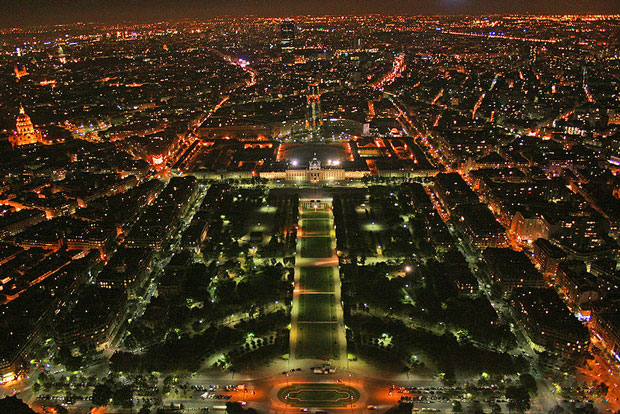

Paris is known for its many elegant parks, but the city boasts a large number of very diverse parks. While some date back to the 17th century, many modern parks have been created in the last couple of decades. Even though Paris has a dense urban structure, the city boasts more than 400 parks.
The Paris squares or places that we want to peak at are those that are more secluded - somewhat like a park in miniature. These will be the locations that can give you respite from a busy day. As you restore your spirit, enjoy the French architecture around the squares, the beautiful plants and the peaceful quiet.

The Champ de Mars (French pronunciation: [ʃɑ̃ də maʁs]; English: Field of Mars) is a large public greenspace in Paris, France, located in the seventh arrondissement, between the Eiffel Tower to the northwest and the École Militaire to the southeast. The park is named after the Campus Martius ("Mars Field") in Rome, a tribute to the Roman god of war. The name also alludes to the fact that the lawns here were formerly used as drilling and marching grounds by the French military.
The nearest Métro stations are La Motte-Picquet–Grenelle and École Militaire. Champ de Mars-Tour Eiffel, an RER suburban-commuter-railway station, is also nearby.
Originally, the Champ de Mars was part of a large flat open area called Grenelle, which was reserved for market gardening. Citizens would claim small plots and exploit them by growing fruits, vegetables, and flowers for the local market. However, the plain of Grenelle was not an especially fertile place for farming.
The construction, in 1765, of the École Militaire designed by Ange-Jacques Gabriel, was the first step toward the Champ de Mars in its present form. Grounds for military drills were originally planned for an area south of the school, the current location of the place de Fontenoy. The choice to build an esplanade to the north of the school led to the erection of the noble facade which today encloses the Champ de Mars. The planners leveled the ground, surrounded it with a large ditch and a long avenue of elms, and, as a final touch, the esplanade was enclosed by a fine grille-work fence.
The Isle of Swans, formerly a riverine islet at the location of the northeastern foot of the Eiffel Tower, was, for the sake of symmetry and pleasing perspectives, attached to the shore. (Note that the Isle of Swans discussed here should not be confused with the Isle of Swans that sits in the middle of the Seine downstream and around the next bend in the river, between the fifteenth and sixteenth arrondissements.)
Jacques Charles and the Robert brothers launched the world's first hydrogen-filled balloon from the Champ-de-Mars on August 27, 1783.
This place witnessed the spectacle and pageantry of some of the most well-remembered festivals of the French Revolution. On July 14, 1790, the first "Federation Day" celebration (fête de la Fédération), now known as Bastille Day, was held on the Champ de Mars, exactly one year after the storming of the prison. The following year, on July 17, 1791, the massacre on the Champ de Mars took place. Jean Sylvain Bailly, the first mayor of Paris, became a victim of his own revolution and was guillotined there on 12 November 1793.
The Champ de Mars was also the site of the Festival of the Supreme Being on June 8, 1794. With a design by the painter Jacques-Louis David, a massive "Altar of the Nation" was built atop an artificial mountain and surmounted by a "Tree of Liberty". The festival is regarded as the most successful of its type in the Revolution.
The Champ de Mars was the site of Expositions Universelles in 1867, 1878, 1889, and 1900.